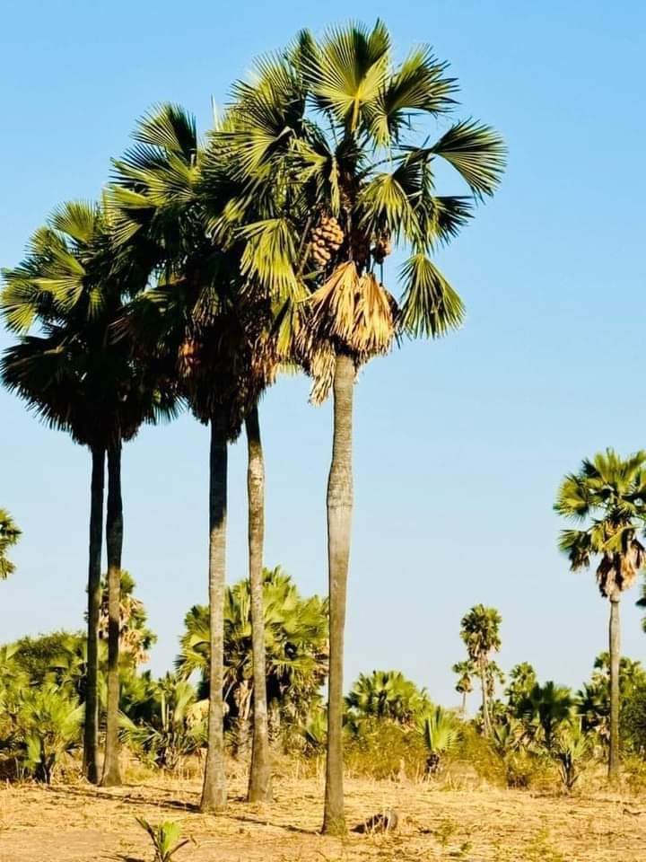

SAFI connects knowledge, people and action to shape resilient savanna futures.
The Savannah Futures Institute (SAFI) is a Ghana-based, African-led organisation working at the intersection of science, indigenous knowledge, innovation, policy and sustainable development. Our focus is the future of Africa's savanna regions and their connections with drylands, grasslands, wetlands, river basins and growing towns and cities.
We are developing an interdisciplinary institution that brings scientific research into dialogue with indigenous knowledge and practical experience. Our research agenda starts with African priorities and seeks partnerships that build lasting capability within African institutions and communities.

Our vision
Healthy landscapes, healthy people, peaceful societies, thriving cultures and food-secure economies across Africa's savannas, contributing knowledge and solutions for resilient societies worldwide.
Our mission
To generate and connect African-led research, data, innovation and indigenous knowledge; turn evidence into useful policy and investment options; strengthen people and institutions; and build equitable partnerships for resilient savanna futures.
Savannah Futures Academy
Strengthening people and institutions is central to that mission. The Savannah Futures Academy is being developed to connect research with practice through short courses, methods workshops, executive learning and fellowships for researchers, practitioners, policymakers and community knowledge experts. Learning activities will be announced with clear eligibility, costs, available support and application arrangements.
How we work
We frame research questions with the people who will use the findings. We bring together environmental, health, social, economic and cultural evidence to understand interacting risks. Where resources and partnerships allow, we will test responses through community-based research sites, living labs and policy dialogues, then assess what can be adapted elsewhere.
A living lab is a setting where researchers and users develop and test ideas together. A policy lab brings evidence and decision-makers together to explore workable choices. Observatories track change over time. These are planned delivery approaches, developed in stages as programmes become ready.
What guides us
- Scientific integrity — careful methods, honest interpretation and openness about uncertainty.
- African leadership — research questions and benefits grounded in African priorities.
- Equitable partnership — clear agreements on responsibilities, resources, data and recognition.
- Respect for indigenous knowledge — consent, attribution and appropriate control over access and use.
Where we work
Ghana is our institutional starting point. Our strategy is to build strong place-based programmes before extending comparative work across West Africa and other African savanna regions. International partnerships will connect this work with relevant experience in Australia, Asia and the Americas. These relationships are a direction for growth, not a claim of existing overseas offices.
Legal identity
The Savannah Futures Institute is registered in Ghana as a Company Limited by Guarantee and operates as a not-for-profit research and innovation organisation.